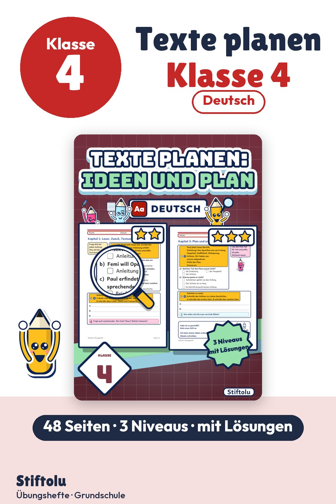

Werbung · Übungsheft von Stiftolu
Texte planen in Klasse 4: Ideen sammeln mit Mindmap, Cluster und Schreibplan

Wer schreibt für wen, und wozu? Diese Fragen stehen vor jedem Text, den Viertklässler als Brief, Bericht, Anleitung oder Geschichte planen. Ideen werden in Stichwortliste, Cluster und Mindmap gesammelt und in einen Schreibplan mit Einleitung, Hauptteil und Schluss geordnet. Am Ende steht der erste Absatz. Das PDF umfasst 48 Seiten und ist erhältlich auf eduki.